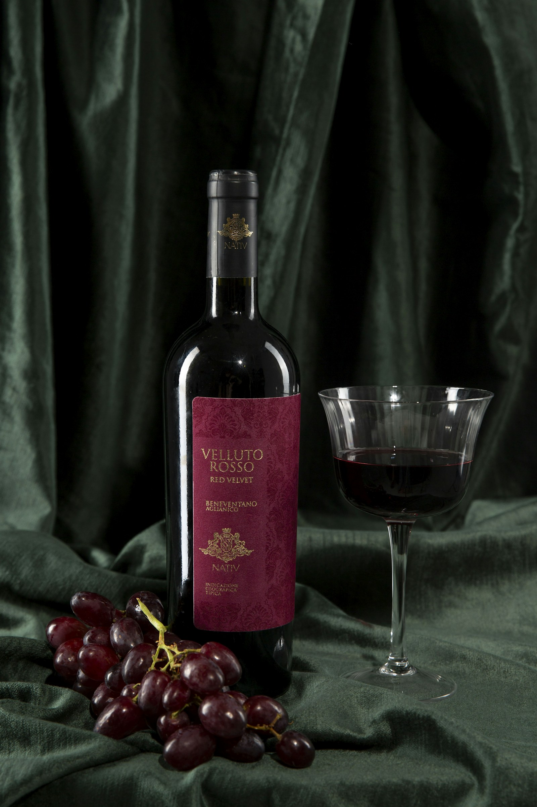

Tinto · 2023
404 Crianza
Tempranillo con fruta negra, madera fina y final mineral. El vino que todos buscan después del primer sorbo.
- Crianza
- 12 meses
- Botellas
- 2.700
Partidas pequeñas · Ribera imaginada · Vendimia manual
La bodega donde cada añada aparece con una personalidad distinta: vinos precisos, catas sin prisa y una colección que no se deja indexar.
Vinos con memoria de suelo calizo, crianza paciente y etiquetas que juegan con el lenguaje digital sin perder el pulso artesanal.
Colección actual
Tres referencias de producción limitada para mesas largas, conversaciones lentas y noches que no necesitan explicación.
Tinto · 2023
Tempranillo con fruta negra, madera fina y final mineral. El vino que todos buscan después del primer sorbo.
Reserva · 2021
Concentrado, profundo y sobrio. Ciruela madura, cacao, hoja de tabaco y una acidez que limpia el paladar.
Blanco · 2024
Viura y albillo con piel de cítrico, flor seca y salinidad. Fermentado en barrica usada para ganar textura.
La bodega
Trabajamos con depósitos pequeños, levaduras autóctonas y una crianza que escucha antes de decidir. La tecnología entra solo donde ayuda: control térmico, trazabilidad y una obsesión tranquila por el detalle.

Experiencias
Cuatro vinos, una mesa de roble y una lectura guiada de suelo, clima y crianza.
Miércoles y viernesMenú de temporada con quesos afinados, setas, pan de masa madre y chocolate amargo.
SábadosRecorrido por sala de depósitos, nave de barricas y archivo de botellas dormidas.
Grupos reducidosClub privado
Acceso preferente a microvinificaciones, preventa de añadas y catas verticales antes de que salgan al mapa.
Solicitar invitaciónReservas
Cuéntanos cuándo quieres venir y prepararemos una cata ajustada a tu grupo. Respondemos en menos de 24 horas laborables.